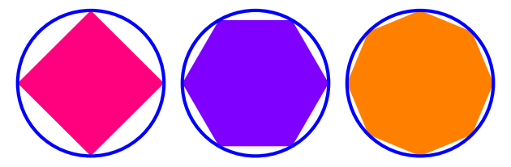
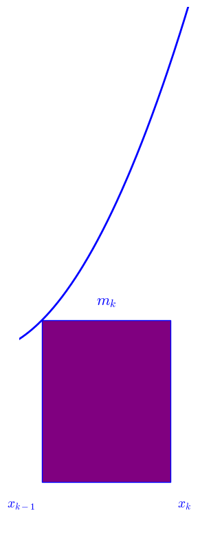

The method of exhaustion is a technique invented in Ancient Greece to calculate areas of curvilinear plane figures by way of successive approximation, using a sequence of inscribed, or circumscribed, polygons.
Antiphon of Athens was the first to apply the method of exhaustion to the calculation of the area of a circle. His method was further developed by Bryson of Heraclea and, later, Eudoxus of Cnidus, the latter of whom formalized Antiphon and Bryson's method into a rigorous procedure. Euclid drew upon Eudoxus in book XII of the Elements, supplying proofs of the formulae for the volume of a sphere, cylinder, cone and tetrahedron. This technique prefigured the development of integral calculus in the 17th century.

One of the most well-known applications of the method of exhaustion is due to Archimedes, who used the technique to calculate the area under a parabolic segment.
Archimedes' proof can be outlined as follows:
- Build a sequence of inscribed polygons \(P_n\);
- Sum the series \(P_n\) and show that sum of each successive \(P_{n+1}\) adds to \(\frac {1}{4}\) the area of the previous sum;
- Show that \(P_n\) reduces to a geometric series that converges to the area of the figure;
- Reducto ad absurdum: area must be exactly \(\frac{4}{3} P_1\), nothing else is possible.
See the following for a detailed derivation of the above result:
- The Quadrature of the Parabola, Archimedes
- Archimedes' quadrature of the parabola and the method of exhaustion, John Abbott College
The Riemann integral is defined in terms of lower and upper sums. Informally, these are approximations to an integral's value from above and from below. These sums are defined by partitioning an interval and multiplying through by successive minimums and maximums, respectively:
$$L(f, P) = \sum_{i=1}^n m_i(t_i-t_{i-1})$$
and
$$U(f,P) = \sum_{i=1}^n M_i(t_i-t_{i-1}).$$
where \(P\) is a partition of the interval and
\(m_k = \inf\{f(x): x \in [x_{k-1}, x_k]\}; M_k = \sup\{f(x): x \in [x_{k-1}, x_k]\}.\)
It is clear that \(L(f,P) \leq U(f,P)\) for the same \(P\), but for different partitions \(P, Q\) this is not obvious. If \(Q\) is a refinement of a partition \(P\), it contains every point of \(P\). Adding a point \(z\) to the subinterval \([x_{k-1},x_k]\), we have:
\(m'_k = \inf\{f(x):x \in [z,x_k]\},\)
\(m''_k = \inf\{f(x):x \in [x_{k-1},z]\}.\)
Then \(m_k \leq m'_k, m_k \leq m''_k\), due to the fact that the new subinterval is a smaller set and its infimum cannot be less than the infimum over the original, larger interval. The contribution of the new interval to the lower sum can only increase, so refinement can only increase lower sums:
\(m_k(x_k-x_{k-1}) = m_k(x_k - z) + m_k(z-x_{k-1}) \leq m'_k(x_k-z) + m''_k(z-x_{k-1}).\)

Similarly, refinement decreases upper sums. Then, we have that
\(L(f,P_1) \leq L(f,Q) \leq U(f,Q) \leq U(f,P_2).\)
Sources consulted:
- Tom M. Apostol, Calculus, Volume 1
- Stephen Abbott, Understanding Analysis
- Archimedes; Sir Thomas Little Heath, The Works of Archimedes
- John Abbott College, Archimedes' quadrature of the parabola and the method of exhaustion
- Jose N Contreras, A Brief History of the Method of Exhaustion with an Illustration
- Wikipedia, Method of exhaustion
Graphics created in SageMath.